MANUAL DE
INSTALACIÓN
Y CONFIGURACIÓN
VISUAL STUDIO CODE
Instalación en Windows, configuración del idioma español, apertura de carpetas de trabajo y personalización inicial
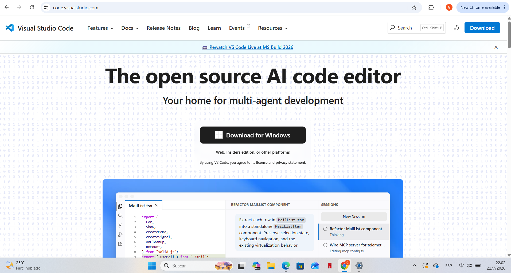
|
Tipo de documento |
Manual técnico de usuario |
|
Aplicación |
Microsoft Visual Studio Code |
|
Plataforma utilizada |
Windows |
|
Título |
Manual de instalación y configuración de Visual Studio Code |
|
Objetivo |
Guiar al usuario durante la descarga, instalación y configuración inicial de Visual Studio Code. |
|
Alcance |
Desde el acceso al sitio oficial hasta la apertura de una carpeta de proyecto y la instalación de extensiones de personalización. |
|
Dirigido a |
Usuarios que requieren preparar Visual Studio Code para actividades de programación y edición de archivos. |
|
Fuente de evidencias |
Capturas de pantalla suministradas en el borrador del manual. |
1. Introducción
2. Recomendaciones previas
3. Descarga del instalador
4. Instalación de Visual Studio Code
5. Configuración inicial
6. Cambio del idioma a español
7. Configuración de la carpeta de trabajo
8. Personalización mediante extensiones
9. Verificación final
10. Buenas prácticas y solución de problemas
Visual Studio Code es un editor de código utilizado para crear, editar y organizar archivos de proyectos. El presente manual describe el procedimiento observado en las capturas proporcionadas: acceso al sitio oficial, descarga e instalación en Windows, selección de opciones del instalador, configuración inicial, instalación del paquete de idioma español, apertura de una carpeta de trabajo y personalización mediante una extensión de iconos.
Establecer un procedimiento claro, ordenado y reproducible para que el usuario complete correctamente la instalación y deje preparada la aplicación para comenzar a trabajar.
Al finalizar, Visual Studio Code deberá estar instalado, mostrar su interfaz en español, reconocer una carpeta de proyecto y contar con la personalización de iconos seleccionada por el usuario.
· Cerrar aplicaciones innecesarias antes de ejecutar el instalador.
· Comprobar que se dispone de acceso a Internet para la descarga y la instalación de extensiones.
· Utilizar el sitio oficial mostrado en el documento para obtener el instalador.
· Mantener seleccionada la opción de agregar Visual Studio Code al PATH, ya que facilita su ejecución desde la terminal después de reiniciar.
|
Importante: Las capturas corresponden a una instalación por usuario en Windows. Algunos textos o pantallas pueden variar según la versión instalada. |
Abrir el navegador web y acceder al sitio oficial de Visual Studio Code. En la página principal se muestra el botón de descarga para Windows.
Figura 1. Ingresar al sitio oficial.
Dirección oficial: https://code.visualstudio.com/
Presionar el botón de descarga para Windows y esperar a que finalice la descarga del archivo instalador. Posteriormente, ejecutar el archivo descargado para iniciar el asistente.
En la ventana del acuerdo de licencia, seleccionar la opción “Acepto el acuerdo”. Esta selección habilita el botón “Siguiente”. Presionar “Siguiente” para continuar.
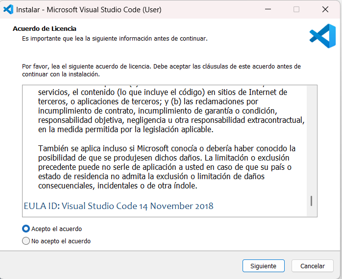
Figura 2. Aceptar el acuerdo de licencia.
|
Nota: No será posible continuar mientras esté seleccionada la opción “No acepto el acuerdo”. |
El asistente propone una carpeta de instalación dentro del perfil del usuario. Se recomienda conservar la ruta predeterminada, salvo que exista una política interna que indique otra ubicación. Presionar “Siguiente”.
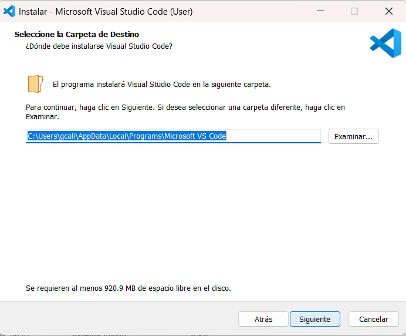
Figura 3. Seleccionar la carpeta de destino.
Mantener el nombre “Visual Studio Code” para los accesos directos del menú Inicio. Si no se desea crear esta carpeta, puede marcarse la opción correspondiente; para una instalación convencional se recomienda dejarla sin marcar. Presionar “Siguiente”.
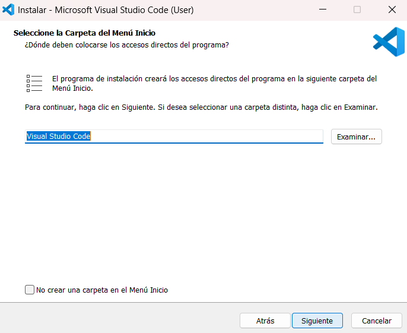
Figura 4. Definir la carpeta del menú Inicio.
En la sección de tareas adicionales, las capturas muestran seleccionadas las opciones “Registrar Code como editor para tipos de archivo admitidos” y “Agregar a PATH”. Mantener estas opciones activas y presionar “Siguiente”.
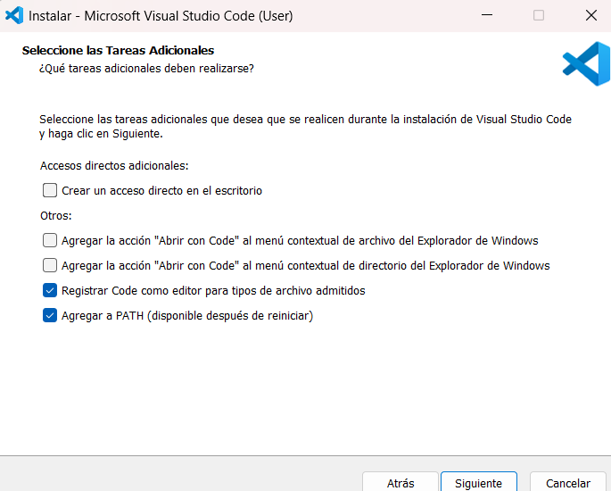
Figura 5. Seleccionar tareas adicionales.
|
Nota: Agregar al PATH permite abrir Visual Studio Code desde una terminal mediante el comando correspondiente después de reiniciar el sistema o la sesión. |
Verificar la carpeta de destino, la carpeta del menú Inicio y las tareas adicionales seleccionadas. Si la información es correcta, presionar “Instalar”.
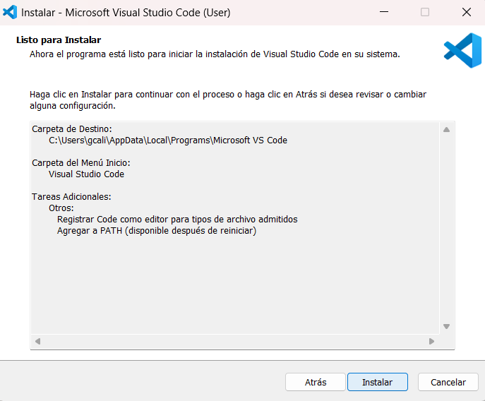
Figura 6. Revisar el resumen e instalar.
Esperar a que el asistente copie los archivos y complete el proceso. Al finalizar, abrir Visual Studio Code desde el acceso directo o desde el menú Inicio.
En el primer inicio se muestra una pantalla de bienvenida. La aplicación puede ofrecer opciones de inicio de sesión; estas no son obligatorias para continuar con la configuración básica.
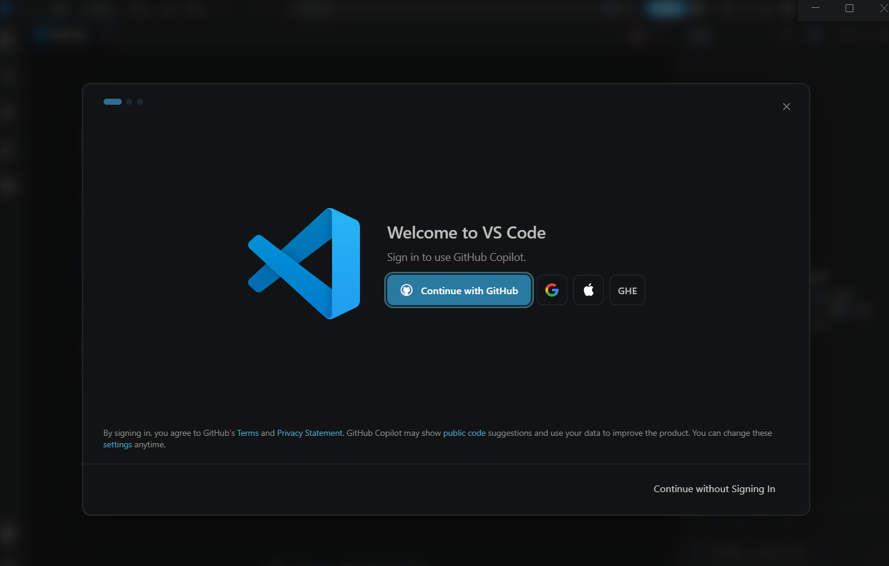
Figura 7. Abrir Visual Studio Code por primera vez.
En la pantalla “Make it Yours”, elegir el tema de color preferido. En las capturas se mantiene una variante oscura. Después de seleccionar el tema, presionar “Continue”.
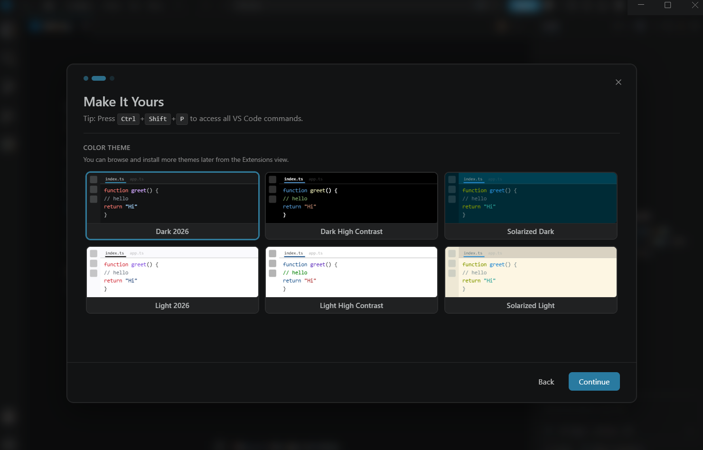
Figura 8. Seleccionar el tema visual.
La pantalla de configuración puede mostrar funciones relacionadas con agentes de inteligencia artificial. Para una configuración básica, se puede continuar sin iniciar sesión y finalizar el asistente mediante el botón disponible.
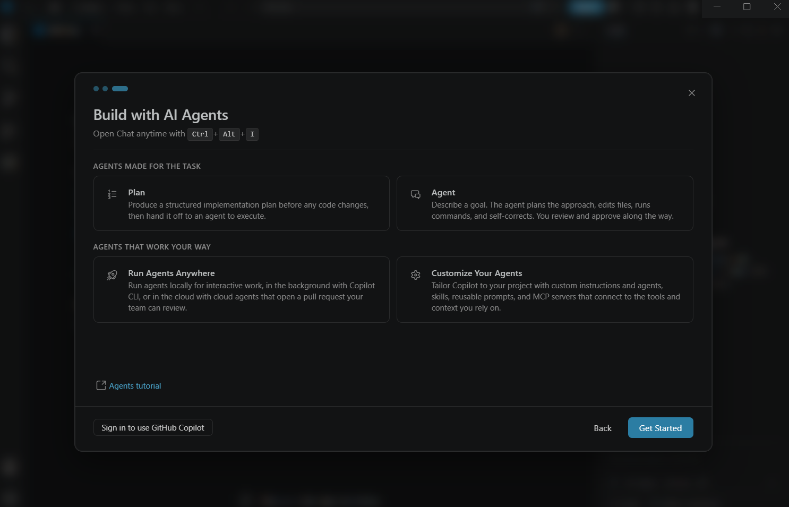
Figura 9. Completar las opciones iniciales.
Al terminar, se abrirá la ventana principal de Visual Studio Code, desde la cual se gestionan archivos, carpetas, extensiones y configuraciones.
La interfaz inicial incluye la barra de actividad a la izquierda, el explorador, la zona de edición en el centro y paneles adicionales. Desde la barra de actividad se accede a las extensiones.
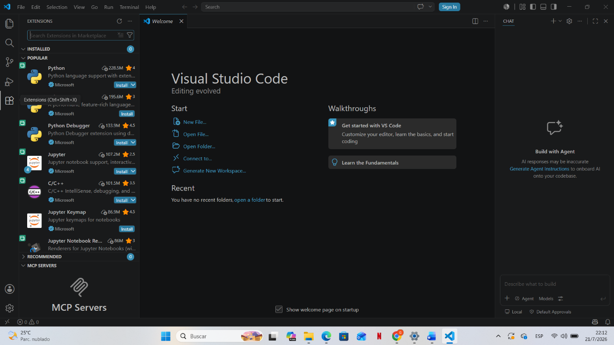
Figura 10. Identificar la interfaz principal.
Abrir la vista de Extensiones desde el icono correspondiente en la barra lateral. En el cuadro de búsqueda escribir “Spanish Language Pack for Visual Studio Code” y seleccionar la extensión oficial mostrada en las capturas.
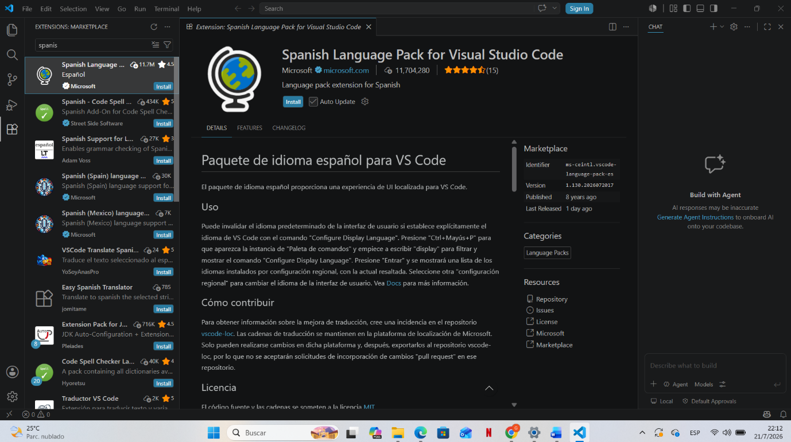
Figura 11. Buscar el paquete de idioma.
Presionar el botón “Install” para instalar el paquete de idioma español.
Después de la instalación aparecerá una notificación preguntando si se desea cambiar el idioma de visualización a español y reiniciar. Presionar “Change Language and Restart”.
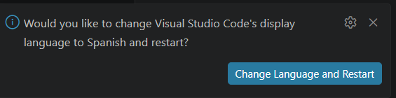
Figura 12. Aceptar el cambio de idioma.
Visual Studio Code se reiniciará. Al regresar a la extensión del paquete de idioma, puede mostrarse una notificación indicando que la instalación se completó. Verificar que los menús y opciones de la aplicación estén ahora en español.
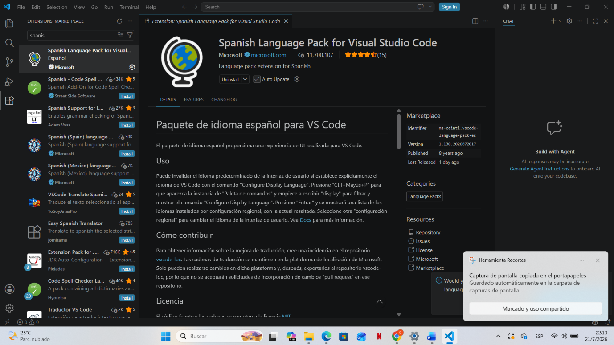
Figura 13. Reiniciar y comprobar la instalación.
En la página de inicio deben observarse opciones como “Abrir archivo”, “Abrir carpeta” y “Crear nuevo archivo”. Esta pantalla confirma que el cambio de idioma fue aplicado correctamente.
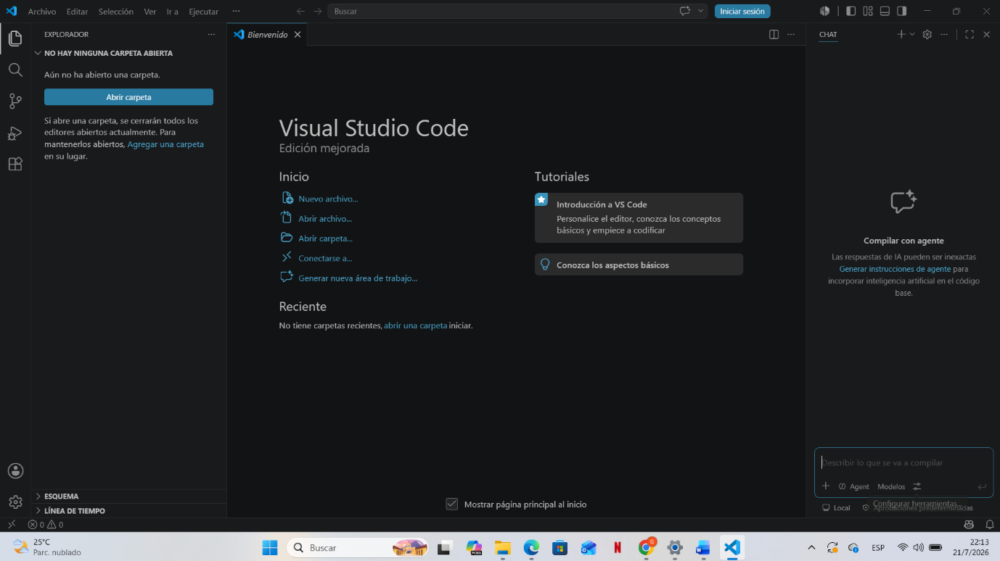
Figura 14. Confirmar la interfaz en español.
Desde la barra superior, abrir el menú “Archivo” y seleccionar la opción “Abrir carpeta”. Esta acción permite cargar un directorio completo como espacio de trabajo.
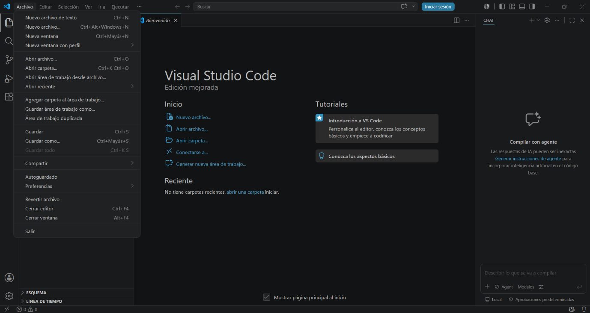
Figura 15. Abrir el menú Archivo.
En el explorador de Windows, navegar hasta la ubicación donde se encuentra la carpeta que contendrá los archivos del proyecto. En las capturas se utiliza una carpeta denominada “PROYECTO” ubicada en el Escritorio.
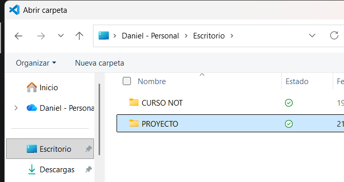
Figura 16. Localizar la carpeta del proyecto.
Marcar la carpeta deseada y presionar el botón “Seleccionar carpeta”. Visual Studio Code abrirá el contenido del directorio en el panel Explorador.
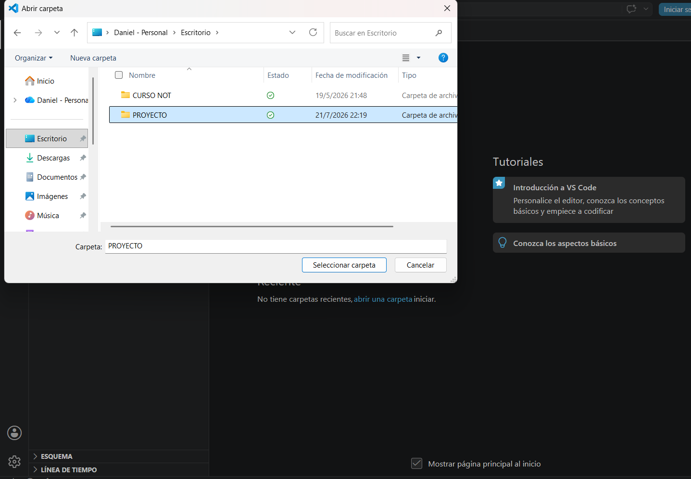
Figura 17. Seleccionar la carpeta.
|
Seguridad: Si la aplicación solicita confirmar la confianza en los autores de la carpeta, revisar el origen de los archivos antes de aceptar. Solo debe habilitarse la confianza cuando la carpeta sea conocida y segura. |
Comprobar que la carpeta y sus archivos aparecen en el panel izquierdo. A partir de este momento se pueden crear, abrir, modificar y guardar archivos dentro del proyecto.
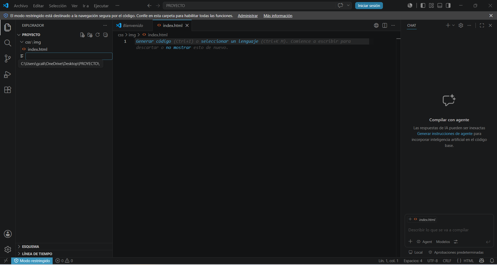
Figura 18. Verificar el espacio de trabajo.
Abrir nuevamente la vista de Extensiones y buscar “Material Icon Theme”. Seleccionar la extensión mostrada y presionar “Instalar”. Esta extensión cambia la apariencia de los iconos de carpetas y tipos de archivo en el Explorador.
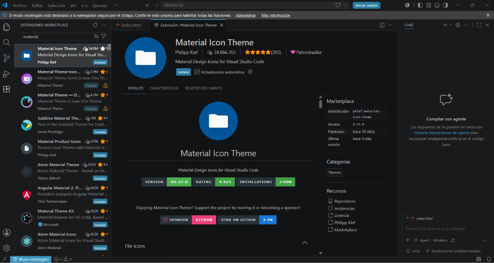
Figura 19. Instalar un tema de iconos.
Después de instalarla, seleccionar el tema de iconos cuando la aplicación lo solicite. La personalización es opcional y no modifica el contenido de los archivos.
|
Verificación |
Resultado esperado |
|
☐ Inicio de la aplicación |
Visual Studio Code abre sin errores. |
|
☐ Idioma |
Los menús principales aparecen en español. |
|
☐ Carpeta de trabajo |
La carpeta seleccionada aparece en el Explorador. |
|
☐ Edición de archivos |
Es posible abrir o crear archivos dentro del proyecto. |
|
☐ Extensiones |
El paquete de idioma y Material Icon Theme aparecen como instalados. |
|
☐ PATH |
Después de reiniciar, la aplicación puede invocarse desde una terminal cuando esta opción fue seleccionada. |
· Descargar Visual Studio Code únicamente desde el sitio oficial indicado en este manual.
· Mantener organizados los proyectos en carpetas independientes.
· Instalar solo las extensiones necesarias y revisar su editor antes de instalarlas.
· Reiniciar Visual Studio Code después de cambiar el idioma o instalar componentes que lo requieran.
· Guardar copias de respaldo de los proyectos importantes.
|
Situación |
Acción recomendada |
|
El instalador no permite continuar |
Confirmar que se seleccionó “Acepto el acuerdo” en la ventana de licencia. |
|
El comando de Visual Studio Code no funciona en la terminal |
Reiniciar el equipo o cerrar y abrir la terminal. Comprobar que se marcó “Agregar a PATH”. |
|
La interfaz continúa en inglés |
Verificar que el paquete de idioma esté instalado y seleccionar “Change Language and Restart”. |
|
La carpeta no aparece en el Explorador |
Volver a Archivo > Abrir carpeta y seleccionar el directorio correcto. |
|
No se pueden instalar extensiones |
Comprobar la conexión a Internet y volver a intentar la instalación. |
Siguiendo este procedimiento, el usuario dispone de una instalación funcional de Visual Studio Code, configurada en español y preparada para trabajar con una carpeta de proyecto. Las extensiones instaladas complementan la experiencia de uso sin alterar la estructura de los archivos del proyecto.